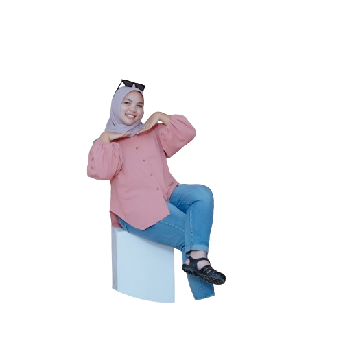

Saya web developer pemula, yang sedang belajar javascript, dan web inilah tempat bermain saya untuk mempamerkan project saya atau untuk track perjalanan belajar saya di web developer in
 Ketahui Saya Lebih LanjutNama saya Yuningsih, bisa di panggil uni. Penulis lahir pada tanggal 17 desember 2003 diSinjai , kecamatan Sinjai Barat. Penulis merupakan anak kedua dari empat bersaudara, buah hati dari pasangan Nasrullah dan Israwati. Penulis bertempat tinggal di Manipi Kelurahan Tassililu Kabupaten sinjai. Penulis menyelesaikan Taman Kanak-kanaknya di TK pembina. Kemudian, penulis melanjutkan sekolah dasarnya di SDN 87 manipi. Kemudian, penulis melanjutkan pendidikan di SMP Negeri 1 Sinjai Barat dan lulus pada tahun 2019. Kemudian, penulis melanjutkan pendidikan di SMA Negeri 6 Sinjai, dan lulus pada tahun 2022. Dan saat ini penulis sedang melanjutkan pendidikan di Universitas Islam Negeri Alauddin Makassar. Jurusan Matematika Fakultas Sains dan Teknologi. Ketahui Saya Lebih Lanjut
Jika anda tertarik untuk membuatnya bisa menghubungi Jasa pembuatan aplikasi web. Pastikan anda memakai jasa yang berpengalaman dan juga terpercaya serta profesional.
Dikembangkan Oleh Yuningsih © 2024